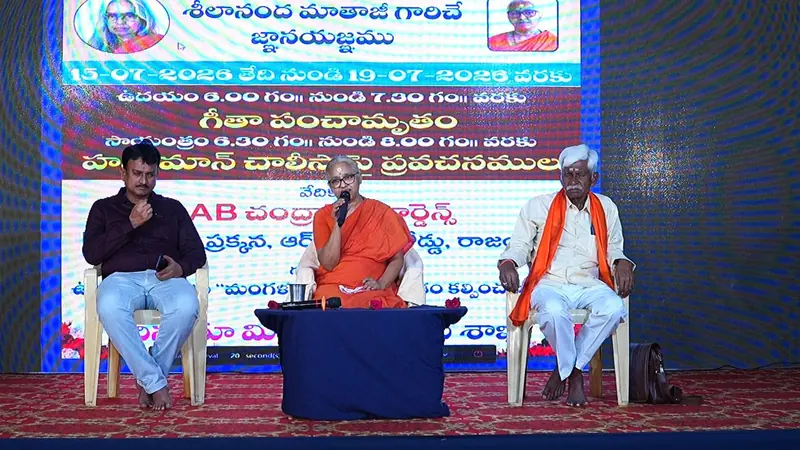
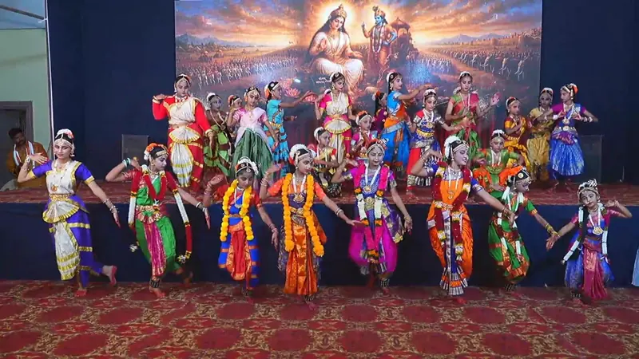
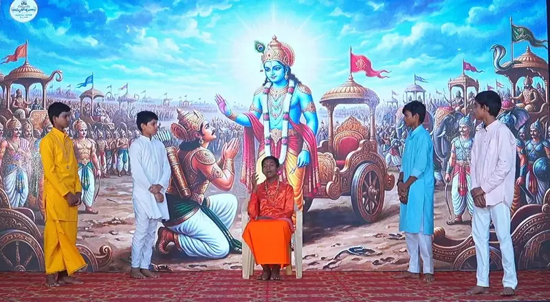
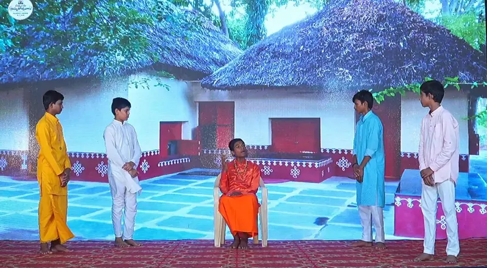
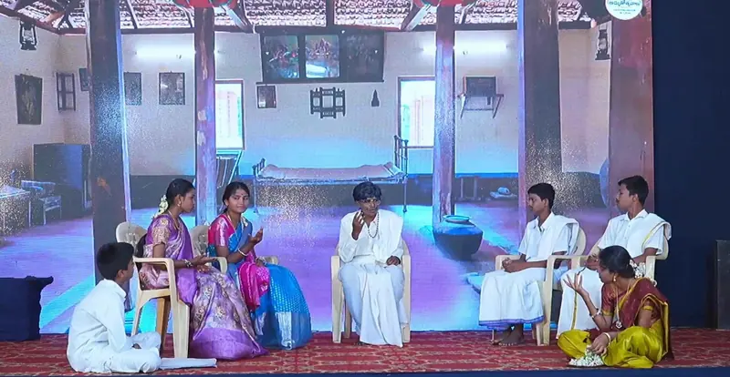
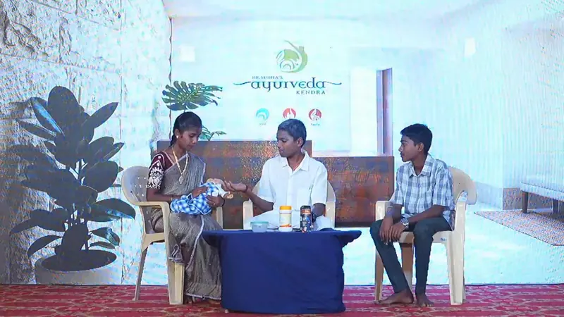
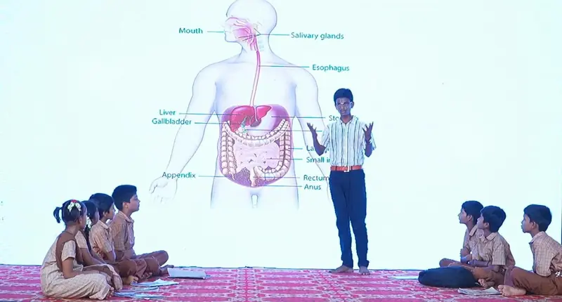
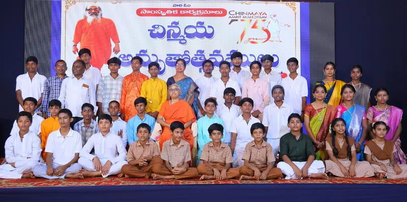

Chinmaya Amruthotsavam 2026
A.B. Chandrareddy Gardens, Rajampet
The five-day Chinmaya Amruthotsavam was celebrated with great devotion and spiritual fervour at A.B. Chandrareddy Gardens, Rajampet, sponsored by the Chinmaya Mission, Rajampet Branch. Students of Chinmaya Hari Hara Vidyalaya, Ellayapalle, presented the drama “Where Is God?” under the guidance of Pujya Swamini Seelananda amma.
Programme
- Every morningGita Panchamritam discourses — the Bhagavad Gita Jnana Yajna conducted by Swamini Seelananda, Head of Chinmayaranyam.
- Every eveningInspiring sessions on the Hanuman Chalisa.
- 19 July 2026Drama “Where Is God?” by the students of Chinmaya Hari Hara Vidyalaya, based on Pujya Gurudev’s teachings on Chapter 15 of the Bhagavad Gita.
- Concluding dayPrasadam distributed to around 1,000 children, followed by a meal for devotees and participants from outside the town.
Event Report
The five-day Chinmaya Amruthotsavam was celebrated with great devotion and spiritual fervour at A.B. Chandrareddy Gardens, Rajampet, from 15th July to 19th July 2026. The programme was sponsored by the Chinmaya Mission, Rajampet Branch.
On 19th July 2026, one of the major highlights of the programme was the thought-provoking drama “Where Is God?” beautifully presented by the students of Chinmaya Hari Hara Vidyalaya, Ellayapalle, under the inspiring guidance and direction of Pujya Swamini Seelananda amma. Based on the profound teachings of Pujya Gurudev on the 15th Chapter of the Bhagavad Gita, the drama vividly conveyed the timeless message that the Divine is present everywhere and in every aspect of creation. Through powerful performances and meaningful dialogues, it emphasized that God can be perceived in every walk of life by those who cultivate the vision to recognize His presence.
The performance captivated an audience of more than 1,200 devotees, who appreciated its spiritual depth and artistic excellence. Through this inspiring presentation, Swamini Seelanandaji brilliantly brought to light the profound philosophy embedded in the fifteenth chapter of the Bhagavad Gita, making its eternal wisdom simple, relatable, and meaningful for people of all ages.
The highlight of the celebrations was the Bhagavad Gita Jnana Yajna, conducted by Swamini Seelananda, Head of Chinmayaranyam, Ellayapalle, Obulavaripalli Mandal, Andhra Pradesh. Every morning, devotees attended the enlightening Gita Panchamritam discourses, while the evenings featured inspiring sessions on the Hanuman Chalisa. Both sessions witnessed an enthusiastic and devotional gathering of devotees.
The celebrations concluded with the distribution of prasadam to around 1,000 children, followed by a wholesome meal served to devotees and other participants from outside the town.
The entire programme was a grand spiritual success, inspiring devotees to deepen their understanding of the Bhagavad Gita and reinforcing the values of devotion, selfless service, and righteous living.
Watch the Drama “Where Is God?” · 4 parts
The full drama “దేవుడు ఎక్కడున్నాడు?” (Where Is God?), based on Chapter 15 of the Bhagavad Gita, as performed by our Vidyalaya children at the Chinmaya Amruthotsavam under the direction of Pujya Swamini Seelananda amma.
Part 1 · “Where Is God?” — Chinmaya Hari Hara Vidyalaya students
Part 2 · “Where Is God?” — Chinmaya Hari Hara Vidyalaya students
Part 3 · “Where Is God?” — Chinmaya Hari Hara Vidyalaya students
Part 4 · “Where Is God?” — Chinmaya Hari Hara Vidyalaya students
Photo Gallery 8 photos · tap to enlarge







